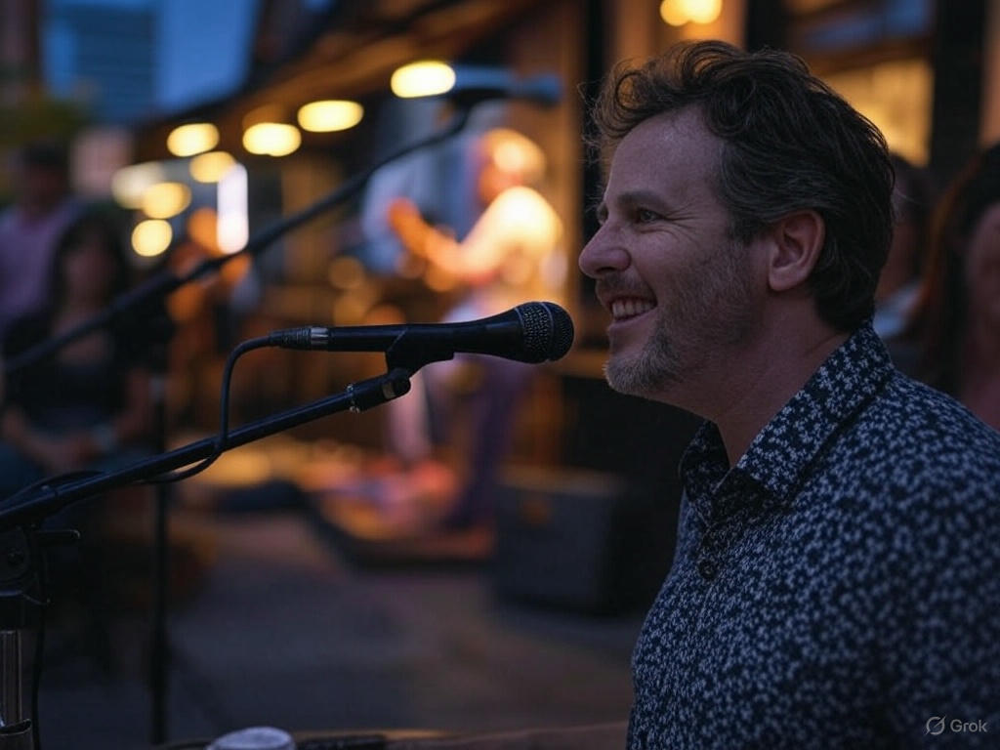
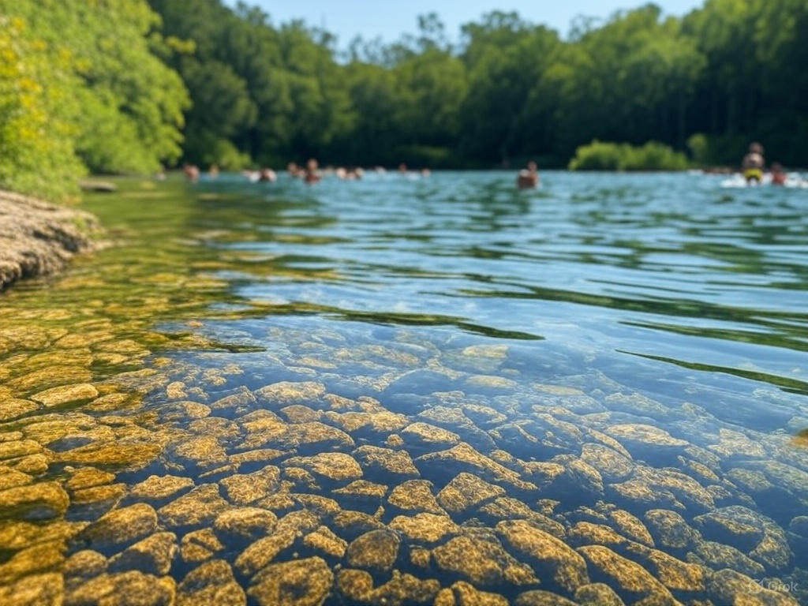
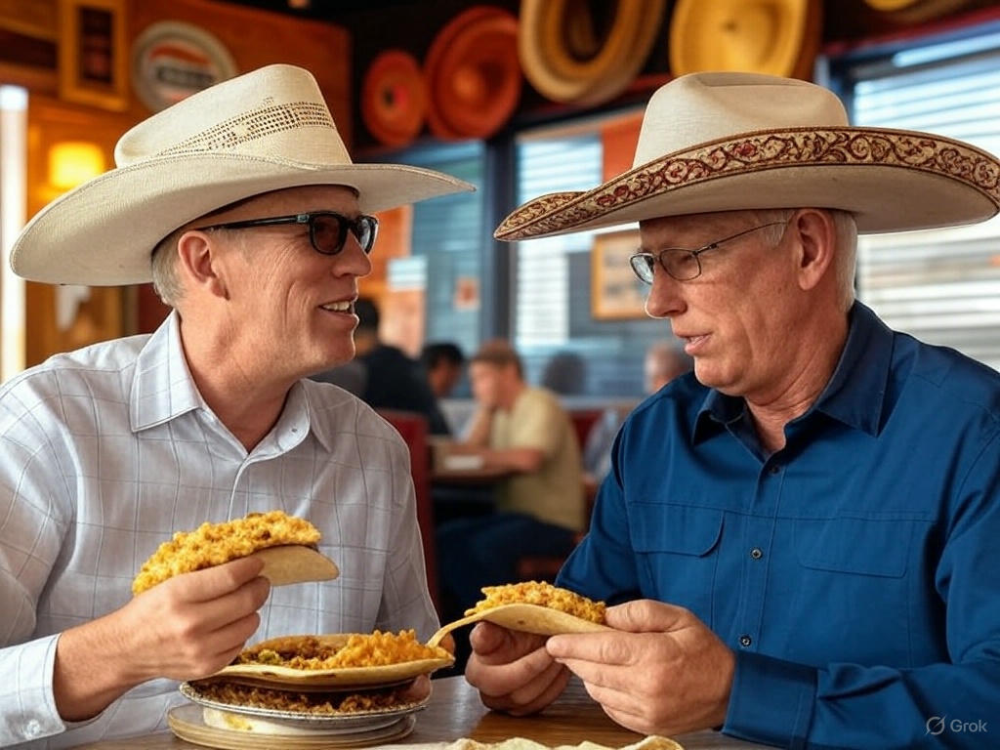
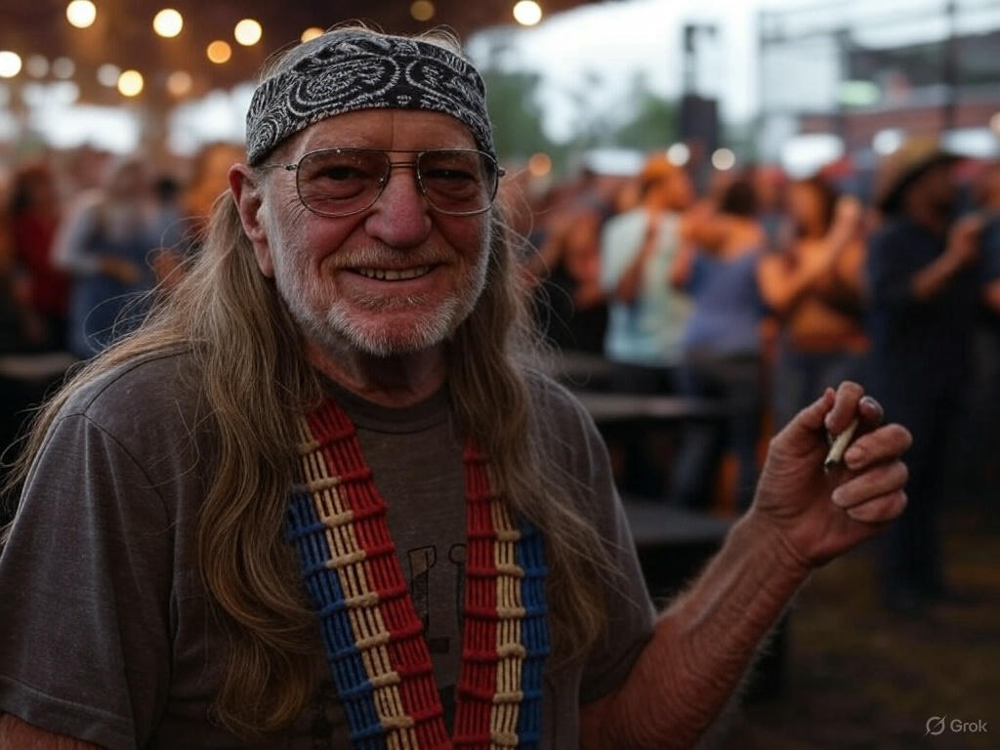

Top three activities to do in Austin

Enjoy live music
Austin, the "Live Music Capital of the World," offers over 250 music venues to experience amazing performances any night of the week.

Cool off at Barton Springs
Barton Springs Pool maintains a refreshing 68-degree temperature year-round, perfect for swimming, relaxing, or enjoying the sunshine.

Taste local food truck cuisine
Explore Austin's famous food truck scene offering everything from authentic tacos to gourmet donuts and craft BBQ.
Your guide
"I've been making music in Austin since the 1970s, and there's no place like it on earth. Let me show you the spots that have inspired me over the decades."
Willie Nelson

Fun Facts About Austin & Willie
About Austin
- Founded in 1839, originally named "Waterloo"
- Home to the largest urban bat colony in North America
- The Austin City Limits music festival attracts 450,000+ visitors annually
- Known for its slogan "Keep Austin Weird"
About Willie Nelson
- Born April 29, 1933, in Abbott, Texas
- Moved to Austin in 1972, helping establish its music scene
- His annual 4th of July Picnic has been an Austin tradition since 1973
- His famous guitar "Trigger" has a hole worn through from decades of playing